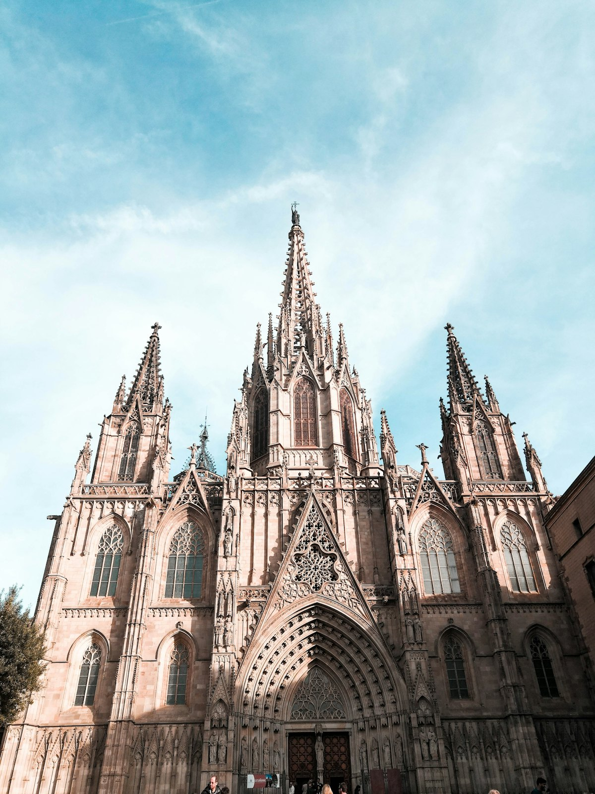
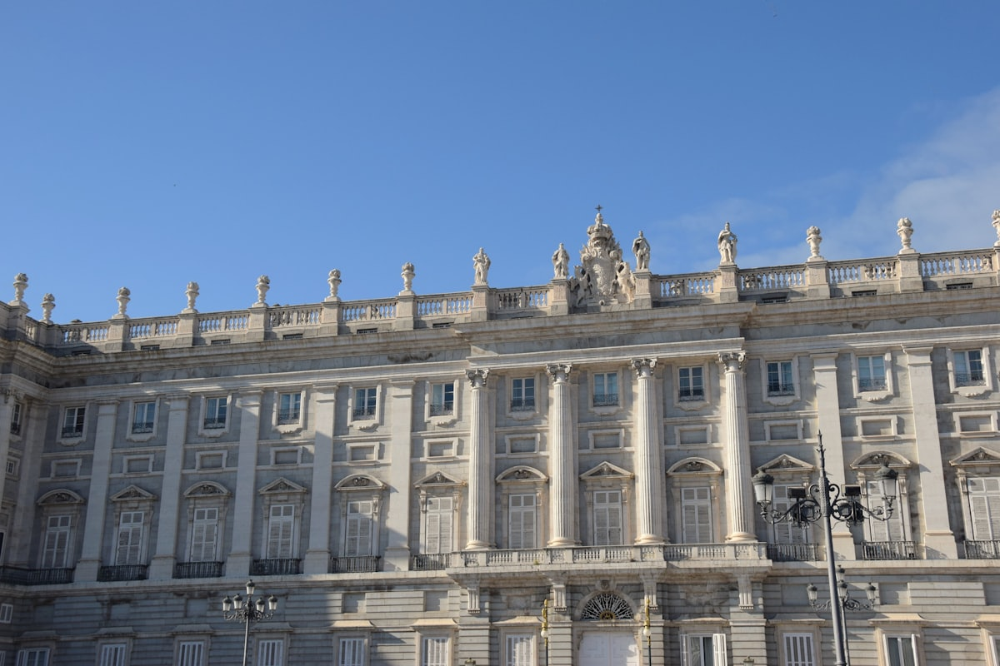
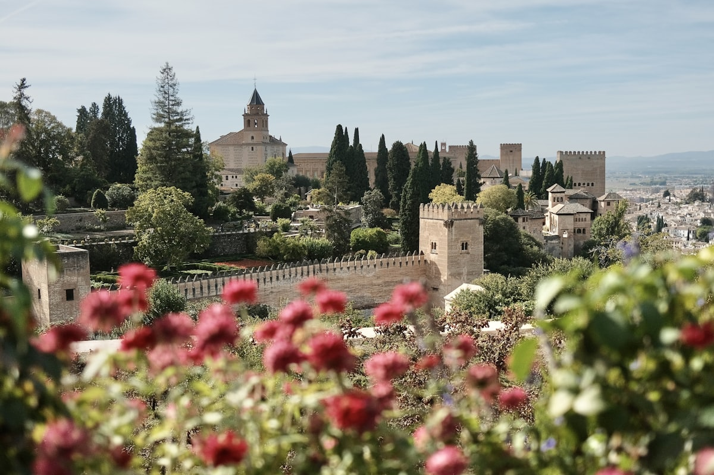
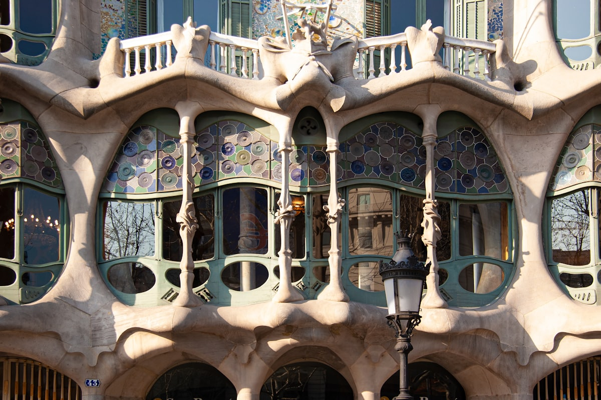
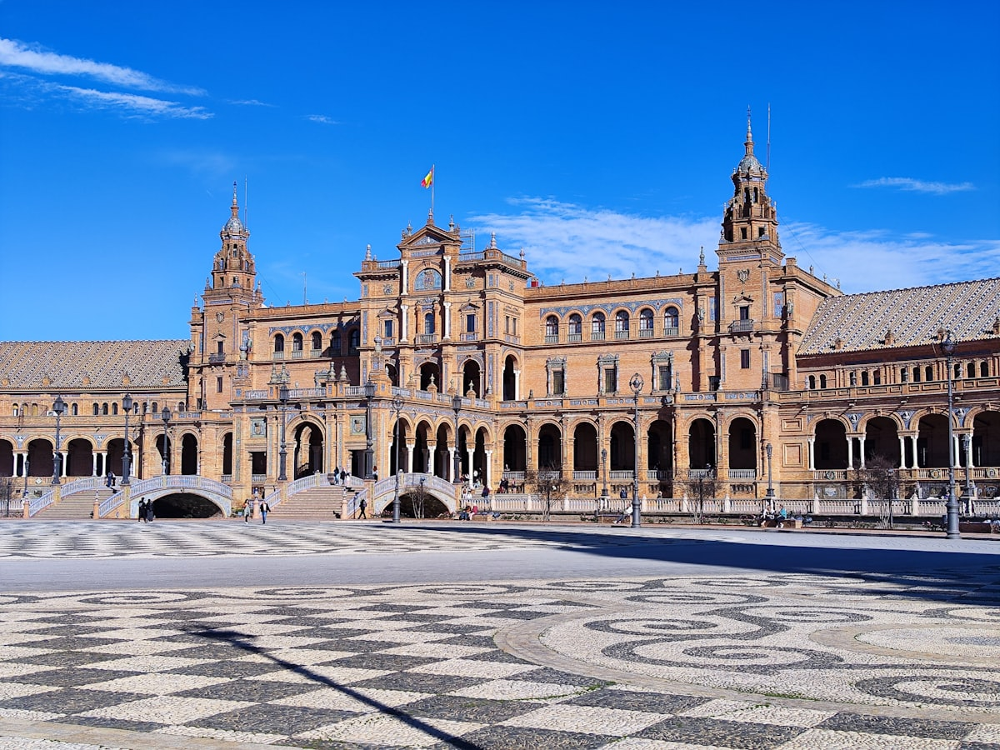
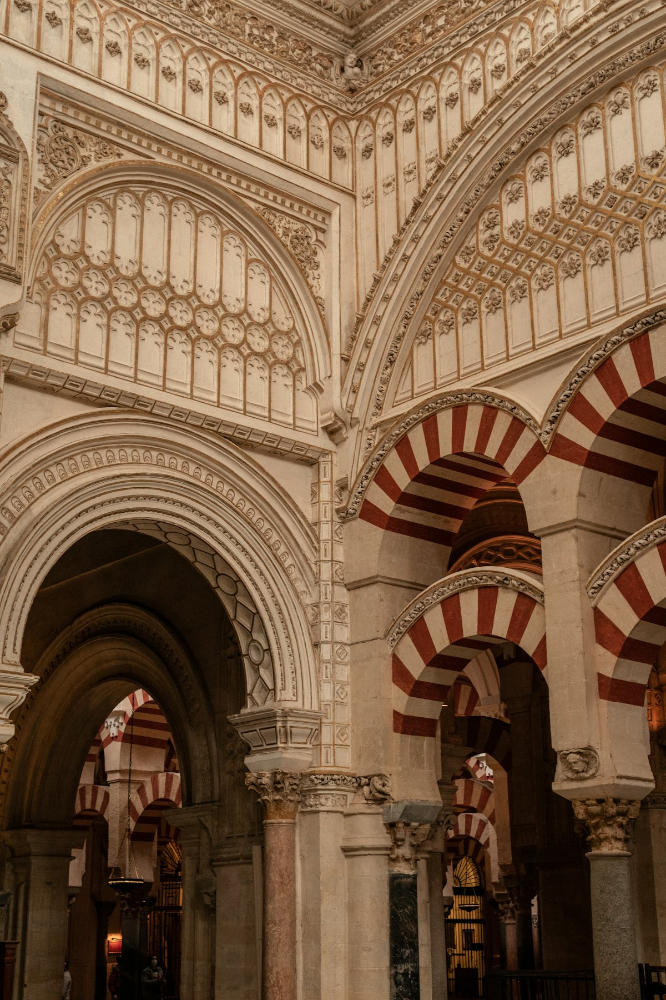
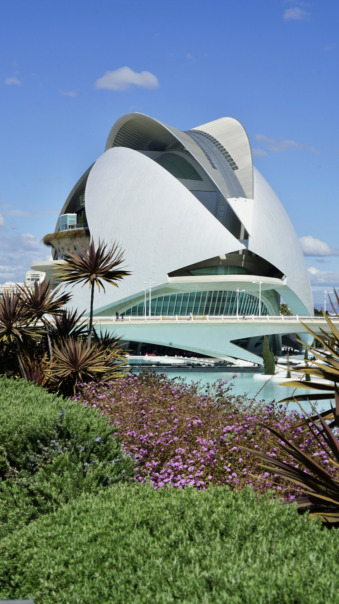
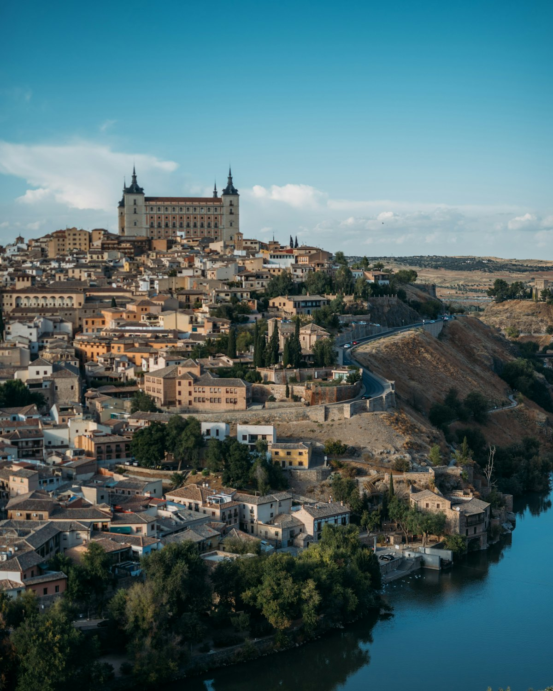

| 事项 | 结论 |
|---|---|
| 事项 | 结论 |
| 签证（最关键） | 申根签证：西班牙领区办理，需护照+照片+行程单+酒店机票订单+医疗保险，材料齐全约 10–15 个工作日；申根签可顺游周边申根国 |
| 时差 | 夏令时（3 月底–10 月底）比北京慢 6 小时，冬令时慢 7 小时 |
| 电源插座 | 220V 欧标 C/F 型（两圆脚），国内充电器需带转换插头 |
| 货币 | 欧元 EUR，1€ ≈ 7.8 元；刷卡极普及，备 100–200€ 现金 |
| 最佳季节 | 4–6 月与 9–10 月天气最佳；4 月圣周、5 月塞维利亚四月节；7–8 月安达卢西亚 40°C 酷热 |
| 行程链 | 马德里 → 托莱多 → 塞哥维亚 → 巴塞罗那 → 瓦伦西亚 → 塞维利亚 → 科尔多瓦 → 格拉纳达 → 马德里 |
| 预算（人均） | 经济 28000–35000 ／ 标准 46000–60000 ／ 舒适 80000–115000（人民币） |
| 三件提前事 | ① 办申根签证 ② 订 AVE 高铁早鸟票 ③ 圣家堂/阿尔罕布拉宫提前 1 个月预约 |
以下为 20 天 19 晚的推荐节奏：马德里及周边 5 天，巴塞罗那 4 天，瓦伦西亚 2 天，安达卢西亚（塞维利亚/科尔多瓦/格拉纳达）6 天，回马德里 3 天收尾。城际以 AVE 高铁为主，瓦伦西亚→塞维利亚用航班。
| 日期 | 行程 | 过夜地 | 主题 |
|---|---|---|---|
| D1 抵马德里 | 北京✈马德里（直飞约 12–13h），入住市区，太阳门 + 马约尔广场夜景 | 马德里 | 抵达+预热 |
| D2 | 马德里皇宫 → 西班牙广场 + 德波神庙 → 圣米格尔市场 | 马德里 | 马德里日 |
| D3 | 普拉多博物馆（委拉斯开兹/戈雅）→ 丽池公园 + 玻璃宫 | 马德里 | 博物馆日 |
| D4 | 高铁到托莱多一日：大教堂 + 圣托梅教堂（格列柯）+ 阿尔卡萨 | 马德里 | 托莱多日 |
| D5 | 高铁到塞哥维亚一日：罗马大水渠 + 烤乳猪 + 塞哥维亚城堡 | 马德里 | 塞哥维亚日 |
| D6 | AVE 高铁到巴塞罗那：兰布拉大道 + 波盖利亚市场 | 巴塞罗那 | 高铁日 |
| D7 | 圣家堂 → 古埃尔公园（马赛克长椅）+ 巴塞罗那海滩 | 巴塞罗那 | 高迪日1 |
| D8 | 巴特罗之家 → 米拉之家（天台烟囱）+ 感恩大道 | 巴塞罗那 | 高迪日2 |
| D9 | 蒙特惠奇山 + 国家宫 + 毕加索博物馆（或诺坎普） | 巴塞罗那 | 山地日 |
| D10 | AVE 高铁到瓦伦西亚：艺术科学城 + 图里亚公园 | 瓦伦西亚 | 未来城日 |
| D11 | 瓦伦西亚老城：中央市场 + 丝绸交易所 + 大教堂 | 瓦伦西亚 | 瓦伦西亚日 |
| D12 | 瓦伦西亚✈塞维利亚：西班牙广场 + 都市阳伞 | 塞维利亚 | 飞行日 |
| D13 | 塞维利亚大教堂 + 希拉达塔 + 皇宫 + 弗拉明戈之夜 | 塞维利亚 | 弗拉明戈日 |
| D14 | 高铁到科尔多瓦：清真寺大教堂 + 百花巷 + 古罗马桥 | 科尔多瓦 | 科尔多瓦日 |
| D15 | 到格拉纳达：阿尔拜辛区 + 圣尼古拉斯瞭望台看日落 | 格拉纳达 | 阿尔拜辛日 |
| D16 | 阿尔罕布拉宫全天：纳宫 + 阿尔卡萨瓦 + 赫内拉利费花园 | 格拉纳达 | 阿尔罕布拉 |
| D17 | 高铁/飞机回马德里：索菲亚王后艺术中心 | 马德里 | 回马德里 |
| D18 | 马德里自由日：丽池补逛 + 太阳门购物 + 巧克力油条 | 马德里 | 自由日 |
| D19 | 埃斯科里亚尔修道院一日 或 马德里奥特莱斯购物 | 马德里 | 埃斯科里亚尔 |
| D20 返程 | 马德里✈北京（直飞约 12–13h），入境到家 | — | 收尾 |
以下为 20 天全程的逐小时执行时间线，可当作「当天打开照着走」的清单。标注 ※ 的可选项视体力与天气取舍。
| 时间 | 事项 |
|---|---|
| 14:00–17:00 | 北京✈马德里巴拉哈斯机场（直飞约 12–13h）。地铁 8 号线或机场大巴进市区（约 30–40min） |
| 17:30–19:00 | 入住马德里市区（太阳门/格兰大道一带），买地铁 10 次卡（约 10–12€） |
| 19:30–21:30 | 太阳门广场 + 马约尔广场（免费）：零公里标志、熊与草莓树雕像，晚餐 Tapas |
| 21:30 | 回酒店休息，倒时差（夏令时比北京晚 6h） |
| 时间 | 事项 |
|---|---|
| 09:00–12:00 | 马德里皇宫（成人约 14€）：欧洲最大皇宫之一，王座厅与皇家药房 |
| 12:00–13:00 | 午餐：西班牙海鲜饭/伊比利亚火腿拼盘 |
| 13:30–16:00 | 西班牙广场 + 德波神庙（免费）：埃及赠建的千年神庙，日落机位 |
| 16:30–18:30 | 圣米格尔市场（免费入场）：小吃集市，Tapas 自由组合 |
| 19:00 | 晚餐：老字号烤乳猪或火腿专门店 |
| 时间 | 事项 |
|---|---|
| 09:00–12:30 | 普拉多博物馆（成人约 15€）：委拉斯开兹《宫娥》、戈雅《裸体的玛哈》 |
| 12:30–13:30 | 午餐：丽池公园附近 |
| 14:00–16:30 | 丽池公园（免费）：玻璃宫 + 水晶宫 + 划船湖 |
| 17:00–19:00 | 阿尔卡拉门（免费）+ 格兰大道散步，晚餐 |
| 时间 | 事项 |
|---|---|
| 08:30 | 马德里阿托查站高铁到托莱多（约 30min） |
| 09:30–12:30 | 托莱多大教堂（成人约 12.5€）+ 圣托梅教堂（格列柯《奥尔加斯伯爵的葬礼》） |
| 12:30–13:30 | 午餐：卡斯蒂利亚烤肉/野味 |
| 14:00–17:00 | 阿尔卡萨城堡（外观免费）+ 老城小巷 + 河谷观景台看全城 |
| 17:30 | 高铁返回马德里，晚餐 |
| 时间 | 事项 |
|---|---|
| 08:30 | 查马丁站高铁到塞哥维亚（约 30min） |
| 09:30–12:00 | 罗马大水渠（免费）：两千年前引水工程，全城地标 |
| 12:00–13:30 | 午餐：烤乳猪（塞哥维亚名菜，百年老店 Mesón de Cándido） |
| 13:30–16:30 | 塞哥维亚城堡（成人约 8€）：迪士尼城堡原型 + 塞哥维亚大教堂 |
| 17:00 | 返回马德里，晚餐 |
| 时间 | 事项 |
|---|---|
| 09:00–11:40 | AVE 高铁：马德里→巴塞罗那（约 2h40，商务座含餐） |
| 12:00–13:30 | 波盖利亚市场（免费）：巴塞罗那最美菜市场，海鲜塔帕斯午餐 |
| 13:30–16:00 | 兰布拉大道（免费）：鲜花街 + 加泰罗尼亚广场，注意小偷 |
| 16:30–18:30 | 哥特区：巴塞罗那大教堂（免费）+ 亲吻墙 + 罗马城墙遗址 |
| 19:30 | 晚餐：tapas 或海鲜饭 |
| 时间 | 事项 |
|---|---|
| 08:30–11:30 | 圣家堂（成人约 26€ 起，含登塔另计）：高迪未竟杰作，诞生立面 + 彩色森林 |
| 11:30–13:00 | 午餐：圣家堂附近 |
| 13:30–17:00 | 古埃尔公园（成人约 10€）：马赛克长椅 + 糖果屋 + 城市全景 |
| 17:30–19:00 | 巴塞罗那海滩（免费）：地中海日落 |
| 时间 | 事项 |
|---|---|
| 09:00–11:30 | 巴特罗之家（成人约 35€）：海洋灵感曲线建筑，一楼全息展示 |
| 11:30–13:00 | 午餐：感恩大道 |
| 13:30–16:00 | 米拉之家（成人约 28€）：波浪天台 + 烟囱士兵 |
| 16:30–18:30 | 感恩大道购物 / 加泰罗尼亚音乐宫外观 + 巧克力博物馆（可选） |
| 时间 | 事项 |
|---|---|
| 09:00–12:00 | 蒙特惠奇山：国家宫（外观免费）+ 魔幻喷泉（周末晚间灯光秀） |
| 12:00–13:00 | 午餐：蒙特惠奇 |
| 13:30–16:00 | 毕加索博物馆（成人约 12€）：毕加索早中期 4000+ 幅作品 |
| 16:30–18:30 | 旧港 + 哥伦布纪念塔（免费）：海港漫步 |
| 时间 | 事项 |
|---|---|
| 09:00–11:45 | AVE 高铁：巴塞罗那→瓦伦西亚（约 2h45） |
| 12:00–13:30 | 午餐：瓦伦西亚海鲜饭（发源地，正午第一锅最香） |
| 14:00–17:30 | 艺术科学城（外观免费，各馆 8–12€）：海洋馆 + 科学博物馆 + 半球剧院 |
| 18:00 | 图里亚公园（免费）：干涸河床改造的城市绿带散步 |
| 时间 | 事项 |
|---|---|
| 09:00–12:00 | 中央市场（免费）+ 丝绸交易所（世界遗产，成人约 4€）：哥特商业殿堂 |
| 12:00–13:00 | 午餐：海鲜饭 + 西班牙凉菜汤 |
| 13:30–16:30 | 圣女广场 + 瓦伦西亚大教堂（免费，登塔约 2€） |
| 17:00–19:00 | 老城小巷 + 海鲜饭博物馆（可选），晚餐 |
| 时间 | 事项 |
|---|---|
| 08:30–10:00 | 瓦伦西亚✈塞维利亚（约 1h20，提前订 300–600 元） |
| 10:30–13:00 | 入住塞维利亚老城 + 午餐 |
| 13:30–17:00 | 西班牙广场（免费）：半圆形广场 + 陶瓷拱廊 + 小运河划船 |
| 17:30–19:30 | 都市阳伞（外观免费，登顶约 5€）：全球最大木结构建筑 |
| 时间 | 事项 |
|---|---|
| 09:00–12:30 | 塞维利亚大教堂 + 希拉达塔（成人约 12€）：世界第三大教堂，登塔看全城 |
| 12:30–13:30 | 午餐：塞维利亚小吃 |
| 13:30–17:00 | 塞维利亚皇宫（成人约 13.5€）：穆德哈尔庭院 + 橘园 |
| 20:00–22:00 | 弗拉明戈表演（约 25–40€）：老城小酒馆版最正宗 |
| 时间 | 事项 |
|---|---|
| 08:30–09:30 | AVE 高铁：塞维利亚→科尔多瓦（约 45min） |
| 09:30–12:30 | 科尔多瓦清真寺-大教堂（成人约 13€）：850 根红白马蹄拱，双文化圣殿 |
| 12:30–13:30 | 午餐：科尔多瓦炖牛尾 |
| 13:30–16:30 | 百花巷 + 古罗马桥（免费）+ 犹太区 |
| 17:00 | 宿科尔多瓦，晚餐 |
| 时间 | 事项 |
|---|---|
| 09:00–11:00 | 科尔多瓦→格拉纳达（高铁约 1.5h 或大巴 3h） |
| 11:30–13:00 | 入住格拉纳达 + 午餐：阿拉伯风味 |
| 13:30–16:30 | 阿尔拜辛区（免费）：摩尔人白色街区，迷宫小巷 |
| 17:00–19:30 | 圣尼古拉斯瞭望台（免费）：阿尔罕布拉宫 + 内华达雪山日落，全场最浪漫时刻 |
| 时间 | 事项 |
|---|---|
| 08:40 | 按预约时段入场（纳宫票分上午场/下午场，提前 1 个月官网抢票） |
| 09:00–12:30 | 纳宫（成人约 19€）：桃金娘中庭 + 狮子庭院，阿拉伯建筑巅峰 |
| 12:30–13:30 | 午餐：阿尔罕布拉宫山脚 |
| 13:30–16:30 | 阿尔卡萨瓦城堡 + 赫内拉利费花园：塔楼眺望 + 苏丹夏宫 |
| 17:00–19:00 | 阿尔罕布拉宫外观夜景（可选灯光秀） |
| 时间 | 事项 |
|---|---|
| 09:00–12:40 | 格拉纳达→马德里（高铁约 3h40 或飞机 1h10） |
| 12:40–14:00 | 入住 + 午餐 |
| 14:30–17:30 | 索菲亚王后艺术中心（成人约 12€）：毕加索《格尔尼卡》镇馆 |
| 18:00–20:00 | 阿托查车站旁 + 晚餐 |
| 时间 | 事项 |
|---|---|
| 09:00–11:30 | 丽池公园补逛（或普拉多 18:00 免费场） |
| 11:30–13:00 | 午餐：西班牙油条配巧克力（Churros con chocolate） |
| 13:30–17:30 | 太阳门 + 格兰大道购物（西班牙 Zara/Mango 全球首发款） |
| 18:00 | 晚餐：Tapas 收官夜 |
| 时间 | 事项 |
|---|---|
| 09:00–10:00 | 马德里查马丁站火车到埃斯科里亚尔（约 1h） |
| 10:30–14:00 | 埃斯科里亚尔修道院（成人约 12€）：世界遗产，王室陵寝 + 图书馆 |
| 14:00–15:00 | 午餐：瓜达拉马山脚 |
| 15:30–18:00 | 返回马德里，自由活动/奥特莱斯（Las Rozas Village 专线车） |
| 19:00 | 晚餐 + 收拾行李 |
| 时间 | 事项 |
|---|---|
| 08:30–10:30 | 自由活动：丽池晨跑/圣米格尔市场早市 |
| 10:30–12:00 | 退房，机场快线（C-1 火车/机场大巴）到巴拉哈斯机场 |
| 13:00–15:00 | 机场办理退税、值机，免税店补货（伊比利亚火腿、藏红花） |
| 16:00–06:00 | 马德里✈北京（直飞约 12–13h），次日清晨入境到家 |
必去（必去）/ 顺路（顺路）/ 可跳过（可跳过）。

必去
必去
必去
必去
必去
顺路
顺路图片为 Unsplash 主题图（圣家堂、马德里皇宫、阿尔罕布拉宫、巴特罗之家、塞维利亚西班牙广场、科尔多瓦清真寺、瓦伦西亚艺术科学城、托莱多等均为西班牙实景），用于页面配图。更多免费景点：丽池公园、兰布拉大道、塞哥维亚罗马水渠、阿尔拜辛区、都市阳伞外观。
点击左侧节点可在地图上定位；点击地图 marker 会高亮对应节点。坐标为 WGS-84 转 GCJ-02 纠偏后标注。
以下为单人、不含购物的估算，人民币计价；出发地基准北京。汇率按 1 欧元 ≈ 7.8 元人民币估算。往返机票按淡季 4500–6000 元计（北京⇄马德里/巴塞罗那直飞）。
| 项目 | 经济（28000–35000） | 标准（46000–60000） | 舒适（80000–115000） |
|---|---|---|---|
| 往返机票 | 北京⇄马德里 4500–5500 | 含巴塞罗那段 7000–8500 | 直飞商务/灵活 11000–18000 |
| 住宿（19 晚） | 青旅/民宿 300–450/晚 | 三星酒店/公寓 550–900/晚 | 四星/五星 1300–2600/晚 |
| 境内交通 | 高铁+大巴 2200–3000 | AVE 高铁+城市卡 3800–5000 | AVE 一等座+包车 8000–12000 |
| 门票 | 基础景点约 1000–1500 | 含圣家堂/阿尔罕布拉等约 2500–3500 | 全含+导览+弗拉明戈 VIP 约 6000–8500 |
| 餐饮（20 天） | 超市+tapas 4000–5000 | 正餐+海鲜饭 6500–8500 | 米其林/星级晚宴 13000–20000 |
带娃推荐：巴塞罗那延长（圣家堂+海滩+古埃尔公园+巧克力博物馆），瓦伦西亚艺术科学城（海洋馆超赞），塞维利亚西班牙广场（可划船）。安达卢西亚三城对低龄娃略累，可砍科尔多瓦；阿尔罕布拉宫山路多，考虑推车与分段休息。西班牙餐厅对儿童友好，多数有儿童菜单。
专为摩尔遗产与弗拉明戈而来：格拉纳达+塞维利亚+科尔多瓦各 2 天，加龙达（悬崖小镇）与白色小镇米哈斯/弗里希利亚纳，共 8–10 天。4 月圣周与 5 月四月节是塞维利亚高光时刻，住宿提前 2–3 个月；春秋两季安达卢西亚体感最佳，盛夏中午务必进博物馆。
| 方式 | 时长 | 参考价 | 备注 |
|---|---|---|---|
| 直飞（推荐） | 北京→马德里约 12–13h | 往返 4500–6000 元 | 国航，马德里巴拉哈斯机场 |
| 转机 | 14–19h | 3800–5200 元 | 经上海/广州/中东/莫斯科，便宜但费时 |
| 巴塞罗那进出（可选） | 北京→巴塞罗那约 12h（部分航季） | 往返 5000–7500 元 | 可马德里进、巴塞罗那出不走回头路 |
| 区域 | 价格/晚 | 优点 | 短板 |
|---|---|---|---|
| 马德里·太阳门/格兰大道 | 经济 350–550 / 标准 600–1000 | 景点步行可达 | 游客多 |
| 巴塞罗那·扩展区/哥特区 | 经济 400–600 / 标准 650–1100 | 高迪建筑集中 | 旺季贵 |
| 瓦伦西亚·老城/车站 | 经济 300–450 / 标准 500–800 | 海鲜饭与老城 | 艺术科学城离老城远 |
| 塞维利亚·老城 | 经济 350–550 / 标准 600–950 | 大教堂皇宫步行 | 夏天很热 |
| 格拉纳达·阿尔拜辛/市中心 | 经济 300–500 / 标准 500–850 | 看阿尔罕布拉宫全景 | 山路多坡度大 |
| 科尔多瓦·清真寺旁 | 经济 300–450 / 标准 500–800 | 步行游览 | 仅住 1–2 晚即可 |